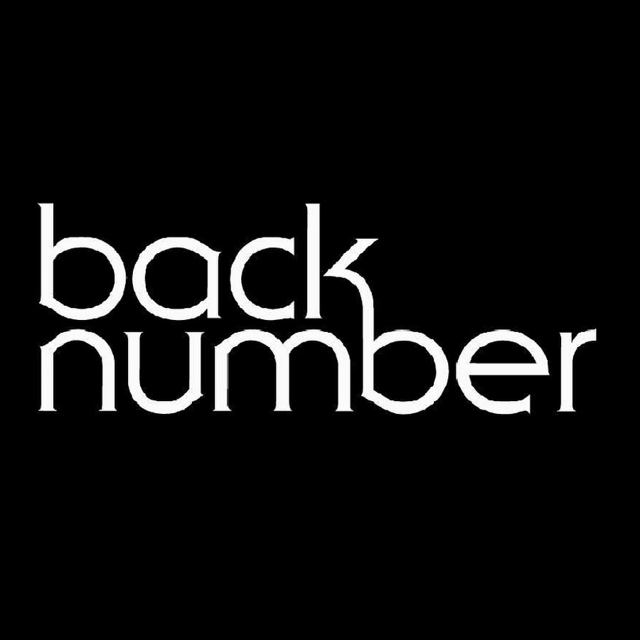

J-POP / ROCK
back number
2026년 9월 12일(토) 오후 6:00, 2026년 9월 13일(일) 오후 6:00 · 킨텍스 제2전시장 9홀확인된 공연 일정
이번 내한은 2회 공연으로 진행됩니다. 날짜별 공연 시각과 예매 조건이 달라질 수 있으므로 선택한 회차를 확인하세요.
공연별 실제 예매 분석
공식 예매처 기준 · 마지막 확인 2026-08-24
- 좌석 등급과 가격
- 스탠딩 R석 154,000원 · 스탠딩 S석 143,000원 · 지정석 R석 154,000원
- 선예매·일반예매 조건
- 서울 공연의 별도 팬클럽 선예매는 공지되지 않았고 일반예매는 2026년 4월 22일 19시에 열렸습니다. 회차별 1인 2매 제한입니다.
- 본인 확인
- 공연 당일 전 관객 본인 확인 후 손목밴드를 받아야 합니다. 직계가족을 포함한 대리 수령과 양도가 금지됩니다.
- 티켓 수령·모바일 티켓
- 예매자 본인의 티켓과 신분증을 준비해야 합니다. 모바일 화면만으로 입장 가능한지 여부는 예매 상세의 최종 현장 공지를 확인하세요.
- 취소표가 풀리는 방식
- YES24 취소 마감과 수수료가 적용됩니다. 취소·결제 실패 좌석이 다시 표시될 수 있지만 공식 고정 재오픈 시각은 공지되지 않았습니다.
아티스트 소개
섬세한 연애 감정과 기억을 이야기하는 가사로 오랫동안 사랑받아 온 일본 록 밴드입니다.
back number 아티스트 페이지 →공연장 교통 안내
GTX-A 킨텍스역과 버스를 이용할 수 있습니다. 전시장 내부 이동 거리가 길 수 있으므로 입장 게이트와 홀 번호를 확인하세요.
킨텍스 제2전시장 현장 가이드 보기 →교통편과 출입구는 당일 운영 상황에 따라 달라질 수 있습니다. 출발 전 주최사와 공연장 공지를 다시 확인하세요.
공연 당일 체크리스트
- 2026년 9월 12일(토) 오후 6:00 · 킨텍스 제2전시장 9홀의 입장구와 집합 시각은 당일 공식 공지를 확인하세요.
- 공연별 본인 확인·티켓 수령 조건은 위 예매 분석과 공식 예매처 안내가 최종 기준입니다.
- 최신 판매 상태와 관람 조건은 공식 예매처에서 다시 확인하세요. 예매 페이지의 최신 공지가 이 상세 기록보다 우선합니다. 공연 직전에는 날짜, 시작 시각, 입장 번호, 수령 장소와 재입장 가능 여부도 함께 확인하세요.
입문용 추천곡 3개
아래 水平線, 幕が上がる, ハッピーエンド 순서는 J-LIVE의 입문용 추천 순서입니다. 각 곡은 공식 YouTube 영상으로 연결됩니다.
back number 공연을 더 잘 즐기는 법
여일육 작성 · 편집·검증 기준 · 마지막 일정 검증 2026-09-06
이번 공연의 관전 포인트
back number의 공연은 화려한 장치보다 시미즈 이요리의 가사와 멜로디가 관객의 기억을 건드리는 과정에 집중해 볼 만합니다. 조용한 벌스에서 감정을 눌러 두다가 후렴에서 밴드 전체가 커지는 대비가 뚜렷합니다. 일본어 가사를 모두 알지 못해도 대표곡의 핵심 문장을 미리 읽고 가면 곡 사이의 정서 변화가 더 잘 들립니다.
공연 전 더 깊게 듣는 순서
입문용 추천곡 3개의 순서와 다를 수 있습니다. 이 글은 공연을 더 깊게 듣기 위한 관점입니다. '水平線'으로 담담한 시작과 넓게 열리는 후렴을 먼저 듣고, 'ハッピーエンド'에서 섬세한 이야기 전개와 보컬 표현을 비교해 보세요. '幕が上がる'는 현재의 밴드 사운드를 확인하는 곡으로 두 곡과 다른 에너지를 보여줍니다. 세 곡을 이어 들으면 back number가 서정적인 이미지 안에서도 리듬과 밀도를 달리하는 방식을 알 수 있습니다.
공연장 도착과 귀가 계획
킨텍스 제2전시장 9홀은 전시장 입구에서 홀까지 걷는 시간이 추가로 필요할 수 있습니다. 모바일 티켓 화면과 입장 게이트를 건물 진입 전에 확인하고, 식사와 화장실은 대기 줄에 합류하기 전에 마치는 편이 안전합니다. 공연 종료 후 GTX-A 승강장과 버스 정류장이 붐빌 수 있으므로 막차와 환승 시간을 여유 있게 잡으세요.
공식 출처와 검증 기록
일정 확인 2026-09-06 · 가격 확인 2026-08-24 · 판매 상태 확인 2026-09-09T04:03:32+09:00 · 글 수정 2026-09-06